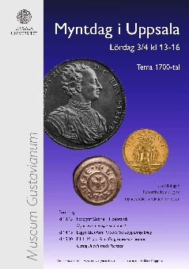
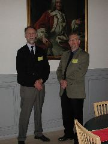
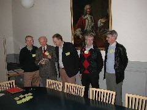
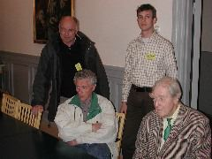
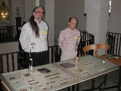
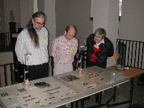
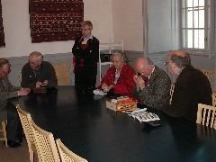
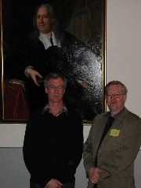
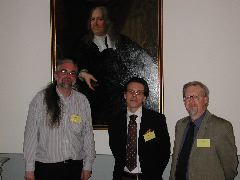

Program
Mötesreferat
Bli medlem
Historik
Stadgar
Samla mynt
Jubileumsbok
Jubileumsbok 2009
Jubileumsbok 2019
Småskrifter
Auktionskatalog
Länkar
Kontakt
Curt Ekström
Lördagen den 3 april 2004 anordnades för tredje året i rad "Myntdag i Uppsala" på Museum Gustavianum - det har nu blivit något av en tradition. Myntdagen arrangerades av Museum Gustavianum i samarbete med Uppsala universitets myntkabinett och Numismatiska klubben i Uppsala. Antalet besökare var till synes något färre än under tidigare år. Det vackra vårvädret lockade förmodlingen till andra konkurrerande aktiviteter.
En populär programpunkt var som vanligt expertbedömningen av besökarnas medhavda mynt, medaljer, polletter och sedlar. Vid denna myntens "antikrunda" var det många som kom med förhoppningen att de hade en raritet i byrålådan. Klubbens expert Lars-Eric Rundquist hade fullt upp med bedömningarna och värderingarna.
Temat för årets myntdag var "1700-tal", vilket återspeglades i utställningarna och de givna föredragen.
Harald Nilsson, föreståndare för Uppsala universitets myntkabinett, presenterade en mindre utställning med numismatisk 1700-talslitteratur från kabinettet, t.ex. böcker av Elias Brenner och Ewald Ziervogel, samt universitetslitteratur med anknytning till 1700-talet, t.ex. Mikael Alms doktorsavhandling från 2002: "Kungsord i elfte timmen - språk och självbild i det gustavianska enväldets legitimitetskamp 1772 - 1809".
Vi hade i år glädjen att utvidga kretsen av utställare. Lagge Ekström, kopparmyntspecialist från Myntklubben Skilling Banco i Linköping, presenterade en utställning kopparmynt från 1700-talet. Här kunde man tydligt följa utvecklingen under 1700-talet med dess likheter, olikheter, och variationer inom olika mynttyper.
Fotograf Gabriel Hildebrand från Stockholm gav i en PowerPoint-presentation en imponerande exposé över de konstverk i form av mynt och medaljer han under sin breda yrkeskarriär dokumenterat för ett stort antal uppdragsgivare. Sakinformationen, kryddad med humoristiska detaljer, bidrog till helhetsbilden.
Som komplement till sin utställning med kopparmynt från 1700-talet gav Lagge Ekström från Linköping ett föredrag om "1700-talets kopparmyntning". Här fick vi, igen i en PowerPoint-presentation, en entusiastisk genomgång av det rika urval av varianter som förekommer inom olika mynttyper och hur de utvecklats med tiden.
Fil.dr. Mikael Alm gav ett föredrag med titeln "En gustaviansk historia - Gustaf III, Gustaf IV Adolf och medaljkonsten" baserat på avhandlingen, som ovan refereras till. Det gustavianska enväldets legitimitetskamp presenterades som det avspeglas i medaljkonsten. Exempel gavs på Gustaf III:s högljudda och Gustaf IV Adolfs mer lågmälda framtoning uttryckt i medaljer på teman som endräkt, trygghet, medborgare och frihet. Mikael Alm gav i föredraget en levande och spännande beskrivning av maktkampen i slutet av 1700-talet och början av 1800-talet.
Föredragshållarna avtackades av Harald Nilsson, och fick var sitt exemplar av Numismatiska klubben i Uppsalas jubileumsbok "Samlad Glädje" samt universitetschoklad.
Bilder:
Klicka på bilderna för större versioner.

{kind=link}
Myntdagens affisch.

{kind=link}
Huvudorganisatörerna av "Myntdag i Uppsala 2004": Curt Ekström, ordförande i Numismatiska klubben i Uppsala, och Harald Nilsson, föreståndare för Uppsala universitets myntkabinett, framför porträttet av Arvid Horn, 1664 - 1742.

{kind=link}
Medlemmar i Numismatiska klubben i Uppsala: Sven-Erik Olsson, Lars-Eric Rundquist, Magnus Wijk, Kjell Holmberg och Jan Karlsson.

{kind=link}
Medlemmar i Numismatiska klubben i Uppsala: Lennart Nilsson, Werner Stensgård, Kurt Olsson och Hans Erfelt.

{kind=link}
Lagge Ekström, Linköping, och Sten-Olof Andersson, Nyköping, vid montrarna med kopparmynt från 1700-talet.

{kind=link}
Lagge Ekström, Sten-Olof Andersson och Kjell Holmberg beundrar kopparmyntutställningen.

{kind=link}
Myntdagens "antikrunda" med expertbedömning av medhavda mynt.

{kind=link}
Fotograf Gabriel Hildebrand poserar efter sitt föredrag "Mynt och medaljer som konst" tillsammans med Harald Nilsson framför porträttet av Olof Rudbeck d.ä., 1630 - 1702.

{kind=link}
Lagge Ekström med föredraget "1700-talets kopparmyntning" och Fil dr Mikael Alm med föredraget "En gustaviansk historia - Gustaf III, Gustaf IV Adolf och medaljkonsten" tillsammans med Harald Nilsson.